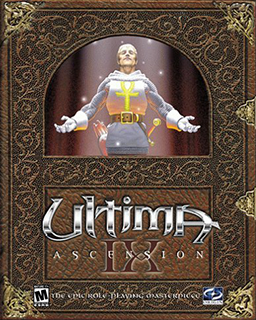

Akalabeth: World of Doom

Story
Lord British goes dungeon diving!
"'Tis said that long ago peace and tranquility covered the lands, food and drink flowed freely, man and beast lived in peace, gold and silver abounded -- it was the Golden Age of Akalabeth.
Mondain, second born of Wolfgang, a great king of old, wished to gain his brother's inheritance, and so he used his great powers for evil. Many years had Mondain traversed the lands of Akalabeth spreading evil and death as he passed. He created deep dungeons, so deep and extensive that their lower depths had never been explored. In these dungeons he unleashed more evil. He sent thieves, skeletons and snakes to dwell near the surface, and daemons and balrogs to guard the depths. Now blood flowed freely in Akalabeth, and foul creatures soon came to roam near the surface. Mondain cast such sickness and pestilence upon Akalabeth, that both man and beast lived in constant fear. Thus was the Dark Age of Akalabeth.
There arose from the land a man, pure and just, to battle the Dark Lord. British, Champion of the White Light, did battle with Mondain deep within the labyrinth of dungeons, eventually driving him from Akalabeth forever. British of the White Light was proclaimed Lord British, Protector of Akalabeth. Alas, much damage had been suffered unto the lands. The Revival of Akalabeth has begun.
'Tis thy duty to rid Akalabeth of the foul creatures which infest it whilst trying to stay alive!"
In the game, the player character visits Lord British and is instructed by him to kill certain monsters. The final mission is to kill a balrog (spelled differently from balrons, which appear in later games), and after this has been accomplished, Lord British proclaims that "thou hast proven thyself worthy of knighthood".
The series was later retconned so that Mondain attacks Sosaria for the first time in this game, but the player's efforts deflect his attack, making him frustrated and finally leading to the events of Ultima I.
Ultima I: The First Age of Darkness
Story
The story of Ultima I revolves around the evil wizard Mondain and his rule over the kingdom of Sosaria. According to the game's back story, Mondain created an evil gem over 1000 years ago that granted him immortality. Since then, Mondain has released monsters and beasts upon the land that ravage the villages and towns of Sosaria and cause most of the nobles to bicker amongst themselves. In an effort to stop Mondain's dominion, Lord British searches for a person to bring about the wizard's end. This call is answered by the player.
The player is informed that the only way to defeat Mondain is to travel back in time and kill him before the gem of immortality is created. The majority of the game is spent searching for a time machine, and a way to activate it. Four of the lords in the game, one from each realm, hold a gem that will allow the time machine to work once all four gems have been found. In exchange for the gem, the lord will ask the player to complete a quest that involves traveling into a dungeon and killing a specific creature. Once this has been achieved, the lord will hand over his gem.
The time machine itself also needs to be found. Purchasing a space shuttle and traveling into outer space is a prerequisite of this —the player must become a space ace, by destroying 20 enemy ships, in order to complete the game. Once this task has been completed, rescuing a princess will reveal the location of the time machine, which always appears to the north of the castle in which the princess was held prisoner. The main character will then travel back in time and face Mondain before he has completed the gem of immortality. Destroying the gem is a requirement for beating the game as well as killing the wizard himself. Once Mondain is dead, the player is transported one thousand years into the future and rewarded by Lord British. The game narration does not attempt to explain away the temporal paradox caused by killing Mondain 1000 years in the past, thus preventing the events which cause the player to be called to the world in the first place.
Ultima II: Revenge of the Enchantress
Story
From the game's story, the player learns that the lover of the dark wizard Mondain, the enchantress Minax, is threatening Earth through disturbances in the space-time continuum. The player must guide a hero through time and the solar system in order to defeat her evil plot.
The young Minax survived her mentor's and lover's death at the hands of the Stranger (in Ultima I) and went into hiding. Several years later, Minax got older and very powerful, more so than Mondain once was. Minax wanted to avenge the death of her lover, so she used the time doors created by Mondain's defeat to travel to the Time of Legends, a place located at the origin of times.[2] From there, she sent her evil minions to all the different time eras; she also used her dark powers to disturb the fabric of time and influence men, who ultimately destroyed each other in the far future, nearly wiping out humanity.
Lord British called for a hero to crush Minax's evil plans. The Stranger once again answered British's call. The game begins with the Stranger starting his quest to defeat Minax. Minax's castle, named Shadowguard, can only be reached through time doors (similar to moongates in the later games); even then an enchanted ring is required to pass through the force fields inside. The war against Minax's vile legions is long and hard, but eventually the hero hunts down the sorceress to the Time of Legends, pursues her as she teleports throughout the castle, and destroys her with the quicksword Enilno (online backwards).
It's interesting to note that this game is set on Earth. Even though Ultima I is set on the fictional land of Sosaria, Ultima II borrowed characters and the story of Ultima I, but relocated them to Earth with no explanation. Later games in the Ultima series ret-conned this, and assumed that Ultima II actually happened on Sosaria, not Earth, to create a continuity among the games.
Ultima III: Exodus
Story
After Ultima II: The Revenge of the Enchantress was set on Earth, the story of Exodus centers on a quest back in Sosaria, the world of Ultima. The player's mission is to destroy the final remnant of the evil Mondain and Minax. The game is named for its chief villain, Exodus, a creation of Minax and Mondain that the series later describes as neither human nor machine. Although, Exodus appears on the cover of the game as a Demonic figure, it is not encountered at the game's end as such, and is never exactly clear what it is.
At the beginning of the game, Exodus is terrorizing the land of Sosaria from his stronghold on the Isle of Fire (known as Fire Island in Ultima Online). The player character is summoned by Lord British to defeat Exodus and embarks on a quest that takes him to the lost land of Ambrosia, to the depths of the dungeons of Sosaria to receive powerful magical branding marks and to find the mysterious Time Lord, and finally to the Isle of Fire itself to confront Exodus in his lair.
The game ends immediately upon Exodus' defeat; but unlike many games in the genre, Exodus cannot simply be killed in battle by a strong party of adventurers, but only through clever puzzle-solving and by paying attention to the many clues given throughout the game. At the end of the game, players were instructed to "REPORT THY VICTORY!" to Origin. Those who did so received a certificate of completion autographed by Richard Garriott.
Although this is the last game in the series to take place in Old Sosaria, places in the game such as Ambrosia and the Isle of Fire make cameo appearances in later games, namely Ultima VII.
Ultima IV: Quest of the Avatar
Story
Ultima IV is among the few computer role-playing games, and perhaps the first, in which the game's story does not center on asking a player to overcome a tangible ultimate evil.
After the defeat of each of the members of the triad of evil in the previous three Ultima games, the world of Sosaria underwent some radical changes in geography: Three quarters of the world disappeared, continents rose and sank, and new cities were built to replace the ones that were lost. Eventually the world, now unified in Lord British's rule, was renamed Britannia. Lord British felt the people lacked purpose after their great struggles against the triad were over, and he was concerned with their spiritual well-being in this unfamiliar new age of relative peace, so he proclaimed the Quest of the Avatar: He needed someone to step forth and become the shining example for others to follow.
Unlike most other RPGs the game is not set in an "age of darkness"; prosperous Britannia resembles Renaissance Italy, or King Arthur's Camelot. The object of the game is to focus on the main character's development in virtuous life—possible because the land is at peace—and become a spiritual leader and an example to the people of the world of Britannia. The game follows the protagonist's struggle to understand and exercise the Eight Virtue. After proving his or her understanding in each of the virtues, locating several artifacts and finally descending into the dungeon called the Stygian Abyss to gain access to the Codex of Ultimate Wisdom, the protagonist becomes an Avatar.
Conversely, actions in the game could remove a character's gained virtues, distancing them from the construction of truth, love, courage and the greater axiom of infinity—all required to complete the game. Though Avatarhood is not exclusive to one chosen person, the hero remains the only known Avatar throughout the later games, and as time passes he is increasingly regarded as a myth.
Ultima V: Warriors of Destiny
Story
After having mastered the eight Virtues, attaining Avatarhood and retrieving the Codex of Ultimate Wisdom in the previous game, the Avatar is summoned back to Britannia by his old comrades Iolo and Shamino using a magic coin, which was included as a trinket in the game's box. Upon arrival he is greeted by Shamino but they immediately come under attack from the three powerful beings known as the Shadowlords. After apparently repelling them with his Ankh amulet (a feat that cannot be replicated later in the game), the Avatar brings the heavily wounded Shamino to Iolo's nearby hut where Iolo fills him in on recent developments: Lord British has been lost on an expedition into the Underworld, and a tyrant known as Lord Blackthorn now rules Britannia in his stead. Blackthorn enforces a strict, rigid version of the Virtues, which leads to results that are anything but virtuous (such as, "Thou shalt not lie, or thou shalt lose thy tongue", "Thou shalt donate half thy income to charity, or thou shalt have no income" or "Thou shalt enforce the laws of virtue, or thou shalt die as a heretic."), while the mysterious and terrifying Shadowlords terrorize the eight cities of Britannia.
Over the course of the game the Avatar learns that the Shadowlords sprang from three shards of Mondain's Gem of Immortality (destroyed at the conclusion of Ultima I). Representing Falsehood, Hatred and Cowardice - the antithesis for Truth, Love and Courage, the three principles of the Avatar - they have corrupted Blackthorn and subverted his rule.
With the help of his old companions and some new ones, the Avatar forms the Warriors of Destiny in order to eliminate the Shadowlords, undermine Blackthorn's rule, and rescue Lord British to restore him to his throne.
The game deals with the issues of fundamentalism and moral absolutism.
Ultima VI: The False Prophet
Story
Some years after Lord British has returned to power, the Avatar is captured and tied on a sacrificial altar, about to be sacrificed by red demon-like creatures, the gargoyles. Three of the Avatar's companions, Shamino, Dupre and Iolo, suddenly appear, save the Avatar and collect the sacred text the gargoyle priest was holding.
The Avatar's party flees through a moongate to Castle Britannia, and three of the gargoyles follow. The game begins with the player fighting the gargoyles in Lord British's throne room. After the battle, the Avatar learns that the shrines of Virtue were captured by the gargoyles and he embarks on a quest to rescue Britannia from the invaders.
It is only later in the game that the Avatar learns that the whole situation looks rather different from the point of view of the gargoyles – indeed, they even have their own system of virtues.[1] The quest for victory over the gargoyles now turns into a quest for peace with them.
Ultima VII: The Black Gate
Story
The game begins with what appears to be the game introduction on the Avatar's own computer screen. Suddenly, the screen is filled with static, and a red creature who calls himself The Guardian proclaims:
“ Avatar! Know that Britannia has entered into a new age of enlightenment! Know that the time has finally come for the one true Lord of Britannia to take His place at the head of His people! Under my guidance, Britannia will flourish. And all the people shall rejoice and pay homage to their new... Guardian! Know that you, too, shall kneel before me, Avatar. You, too, shall soon acknowledge my authority - for I shall be your companion... your provider... and your master! ”
The Orb of the Moons glows, and the Avatar finds that a red moongate has appeared behind the house. The Avatar thus returns to Britannia through the moongate, and arrives in Trinsic, where he[6] meets Iolo. Iolo tells him that two centuries have passed since he left. The whole town is shocked due to a ritualistic murder that occurred the preceding night - the body of the blacksmith Christopher was found in the stable. Finnigan, Mayor of Trinsic, asks the Avatar to investigate the incident.
In Trinsic, the Avatar gets to meet several members of a new religious organization called the Fellowship. Eventually, in Britain, he meets Batlin, one of the founders of the Fellowship. He also meets Lord British, who urges the Avatar to join the Fellowship, which, according to him, has done a lot of good things. It also turns out most of the mages of the realm have gone completely insane without any good explanation, and their magic doesn't work as it should.
Most of the game is composed of the Avatar's investigation of the Fellowship and the Trinsic murders. During the game, the Avatar finds more and more clues that implicate the Fellowship in shady dealings; more murders appear on the way, and the Avatar himself goes undercover by entering the Fellowship. His quest takes him to most of the cities and towns of Britannia, including Minoc, a destroyed Skara Brae run by a liche, Yew, Moonglow and Bucaneer's Den.
The Avatar eventually learns of an astronomical alignment of importance that is supposed to happen very soon, and about the three evil Generators that the Guardian has created, which have been causing most of the problems of the land. After destroying them, he and his companions follow several leads to the Isle of Avatar, where members of the Fellowship are waiting. The Fellowship has fashioned a black moongate out of blackrock on this island to allow the Guardian to enter Britannia when the astronomical alignment happens.
The Avatar confronts the Fellowship members and defeats them. As the astronomical alignment begins and the Guardian starts to loom behind the moongate, the Avatar destroys the gate just in time, preventing the Guardian from entering Britannia. As the moongates had been rendered useless by the destruction of one of the generators, the Avatar has to remain in Britannia, with no means to return to Earth.
Ultima VIII: Pagan
Story
Following the defeat of the charismatic religious leader Batlin on Serpent Isle, the Guardian banishes the Avatar to a world that he has already conquered: Pagan. Ultima VIII has a much darker tone and a very different premise, in comparison to most of the Ultima games. The world of Pagan is entirely different from that of Britannia: the Virtues were not part of Pagan's culture, and the magic systems and monsters were entirely different.
The world of Pagan is in eternal twilight as the result of an ancient battle between the Elemental Titans and the evil "Destroyer", which resulted in the victory of the Titans. However, the people of Pagan had to pay a high price: the Titans had to henceforth be worshiped as gods. The Titans bestow powers on their most ardent followers, but they are otherwise cruel and unloving rulers, and their followers terrorize the general population.
Ultima VIII sets off where Ultima VII Part Two: Serpent Isle ended: The Guardian has grasped the Avatar from the Void, and now drops him into the sea of the world Pagan through a pentagram-shaped portal. In the introduction, the Guardian reveals his plot: "You have been a thorn in my side for far too long, Avatar. Your two worlds will be crushed. Britannia first, then Earth. I shall parade you before their conquered peoples as the fallen idol of a pathetic ideal. I banish you to the world of Pagan. No one here knows of the Avatar!"
The Avatar regains consciousness on the shore after being rescued from the sea by a fisherman (who turns out to be an important character later on in the plot). He soon witnesses the execution by beheading of a townsman, ordered by the tyrannic ruler of the region, Lady Mordea.
Later, visiting the wizard Mythran, he learns that there are four Titans on Pagan, each one having one of the Elements as his/her domain: Water (Hydros), Air (Stratos), Fire (Pyros) and Earth (Lithos). The more privileged followers of Lithos are identified as necromancers, the wizards that trap Pyros and tap him for their power as sorcerers, the followers of Stratos as theurgists and the (albeit highly selective) followers of Hydros as tempests. Apart from those, a fifth type of magic known as Thaumaturgy exists and is pioneered by Mythran. In order to escape Pagan, the Avatar has to overcome many obstacles and master the ways of all titans, finally becoming the Titan of Ether: the magical field and fifth element.
During his quests, the Avatar collects the four artifacts of the Titans, unleashing violent thunderstorms, hurricanes, earthquakes and meteor showers by doing so. These artifacts allow him to enter the Ethereal Plane and defeat the Titans on their own turf. The Avatar then reconstructs the original blackrock gate that originally allowed the Guardian to enter Pagan. By entering the reconstructed gate, the Avatar is teleported back to Britannia, which is now ruled by the Guardian.
Ultima IX: Ascension
Story
In the beginning of Ultima IX, the Avatar had somehow returned to Earth for an unspecified amount of time before getting back to Britannia. The game starts just after the end of Ultima VIII, in which the Avatar is transported to a Guardian-controlled Britannia. He arrives in Britannia on a mountain overlooking the Guardian's keep in Terfin. The Avatar is transported to Stonegate by Hawkwind the Seer (from Ultima IV), who informs him that great columns have appeared throughout the land, and their malignant influence has caused plagues, famine, and other natural disasters. Under their power, the people of Britannia have twisted the Virtues into mockeries of their true meaning. The Guardian is helped by Lord Blackthorn, who leads the Wyrmguards and forces the people to obey the Guardian.
As the quest progresses, the Avatar learns that the Guardian has stolen the Runes of the Virtues and twisted them into the glyphs that form the heart of each of the columns. Most of the game consists of traveling through the dungeons to recover the glyphs and visiting the Shrines of the Virtues to meditate and cleanse them. Eventually, it is revealed that the Guardian is nothing other than the dark half of the Avatar himself, and the only way to save Britannia is for the Avatar to ascend to a higher plane, taking the Guardian with him. The player is able to accomplish this via an Armageddon spell cast behind a Barrier of Life, which takes the Avatar and the Guardian to a higher plane out of Britannia.